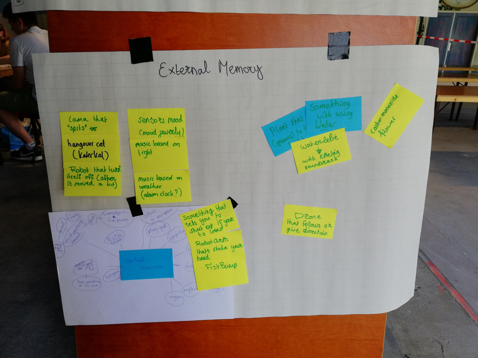
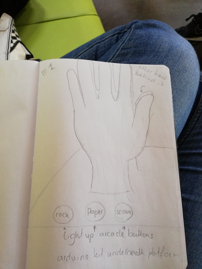
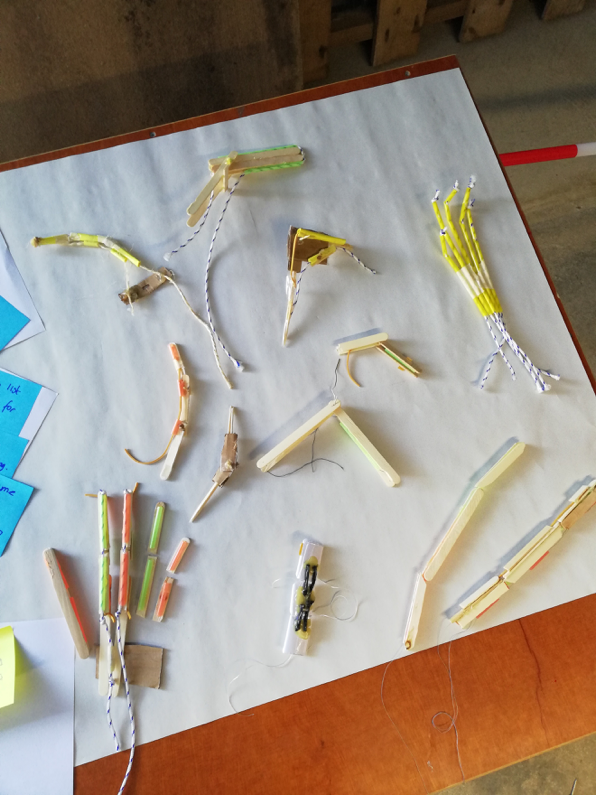
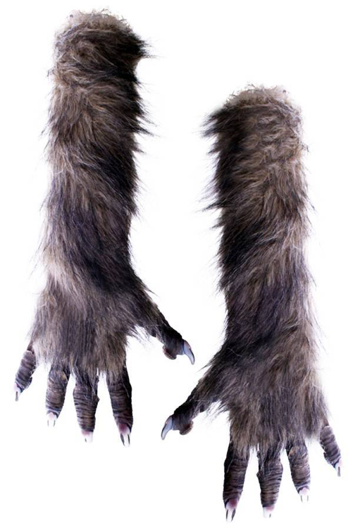
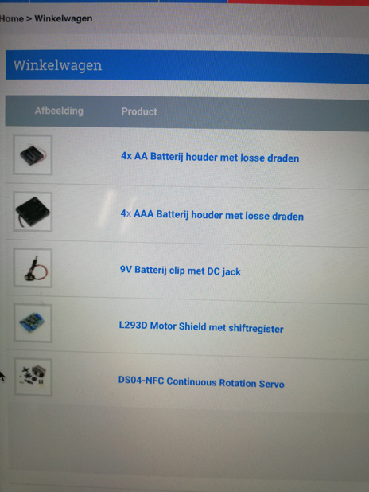
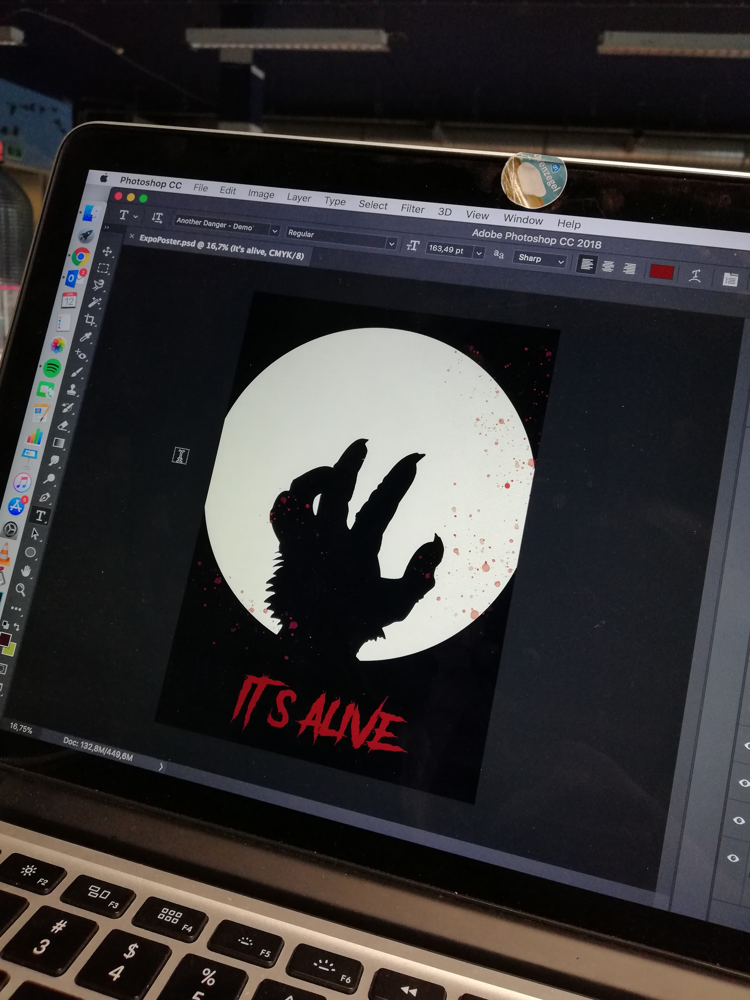
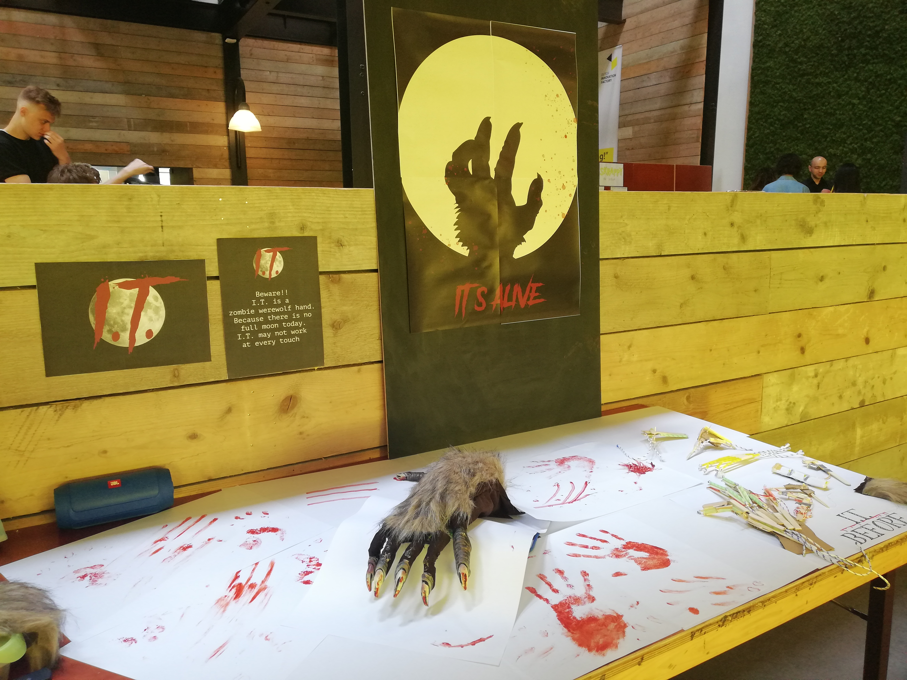
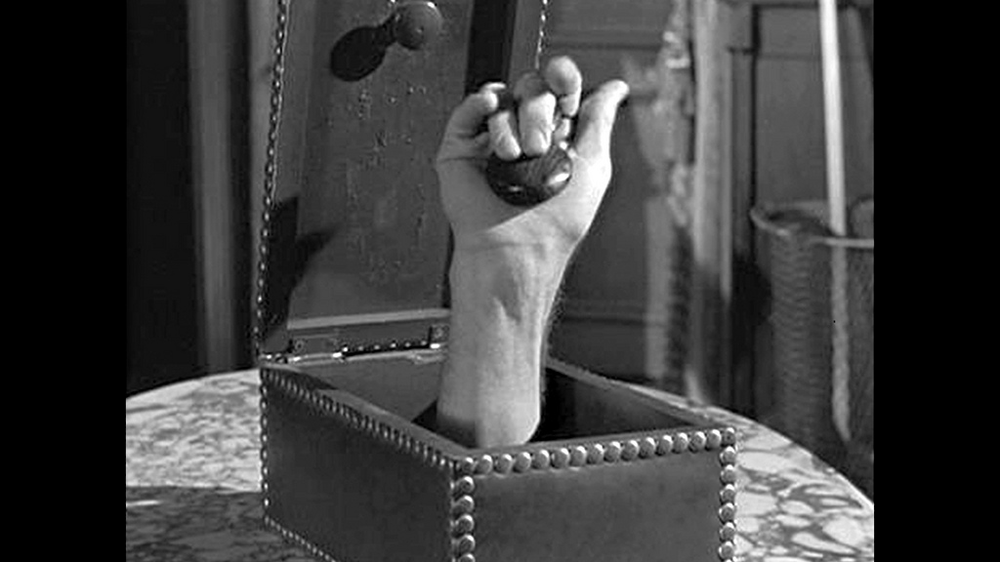

Process
Dag 1, maandag
Vandaag zijn we begonnen met de HCI labweken in Zoetermeer. Na een welkompraatje van Chris kregen we de groepsindeling te zien. Ik ben ingedeeld bij Artificial Creatures, het onderwerp wat voor mij op nummer 1 stond. Vanaf dat moment gingen we aan het werk. We zijn begonnen met het maken van twee borden: een scrum bord en een ‘external memory’ bord. Op het external memory bord zijn we begonnen met het noteren van ideeën voor een concept. Van één idee zijn we een klein prototype gaan maken. Een bloem die afkomt op het licht, met behulp van een arduino kit met sensoren en een servo motortje. Vervolgens zijn we verder gaan nadenken over mogelijke concepten en hebben we een plan gemaakt voor de volgende dag.
Mijn bijdrage: De eerste dag heb ik vooral geholpen met het bedenken van concepten. Ik deed mijn best het proces een beetje op gang te brengen door het maken van een moodboard. Verder heb ik research gedaan naar de mogelijkheid van concepten en de onderdelen die daarvoor nodig zouden zijn.
Dag 2, dinsdag
Op dag twee zijn we begonnen bij het scrumbord om voor onszelf een duidelijk overzicht te creëren van de dingen die we moeten doen, mee bezig zijn en al klaar zijn. Uiteindelijk hebben we besloten om een bewegende hand te maken. De bedoeling was dat hij steen papier schaar zou spelen. We hebben deze dag veel nagedacht over welke bewegingen we de hand willen laten maken en hoe we van een hand een ‘creature’ maken. Er is een eerste prototype van een vinger gemaakt en nagedacht over de aandrijving via motortjes. Na een gesprek met Tim kwamen we erachter dat het toch te ingewikkeld zou worden om de hand steen papier schaar te laten spelen, aangezien we geen ervaren programmeurs in ons groepje hebben. Aan het eind van de dag hebben we besloten om het concept te houden op een zichzelf voortbewegende hand. Mijn bijdrage: Ik heb vandaag vooral weer over het concept nagedacht en schetsen gemaakt. Ik vond het geen hele productieve dag omdat we allemaal nog wat onzeker waren over het concept en hoe we het moesten aanpakken.
Dag 3, woensdag
Vandaag zijn we begonnen met het maken van prototypes. Iedereen is vingers gaan maken van ijsstokjes, rietjes, tandenstokers en elastiekjes. Vervolgens hebben we het beste prototype aangesloten op de arduino en verbonden met een servo motortje. De rest van de dag bestond uit verder knutselen aan de prototypes en research doen naar welke onderdelen we willen gebruiken. Mijn bijdrage: Vandaag ben ik bezig geweest met het maken van verschillende versies van bewegende vingers. Een gemaakt van ijsstokjes en een gemaakt van rietjes en touw. Dit om uit te vinden wat de beste manier is voor het uiteindelijke project. Verder heb ik onderzoek gedaan naar de materialen die we gaan gebruiken, waarschijnlijk wordt dit was of schuim om de hand meer body te geven. Ik ben ook op zoek gegaan naar een geschikte handschoen om over de mechanische hand te doen. Online heb ik een geschikte weerwolf handschoen gevonden.
Dag 4, donderdag
Donderdag zijn we verder gegaan met een prototype en is dat verbeterd en verstevigd. Verder hebben we research gedaan naar verschillende sensoren die we nodig hebben, onder anderen touch sensors. Mijn bijdrage: Vandaag ben ik begonnen met onderzoek doen naar hoe we geluid uit de hand willen laten komen. Ik heb online tutorials gezocht en naar de onderdelen gezocht op webshops. Verder heb ik de weerwolfhandschoen besteld maar kreeg ik later die dag te horen dat hij niet op voorraad is. Vervolgens ben ik opzoek gegaan naar dezelfde handschoenen online en heb ik verschillende winkels gebeld, uiteindelijk heb ik precies dezelfde handschoenen gevonden en nogmaals besteld.
Dag 5, vrijdag
Vandaag zijn we begonnen met voor onszelf een overzicht creëren van wat er nog moet gebeuren en wat we al hebben gedaan. Vervolgens hebben we Chris erbij gehaald om te vertellen wat ons plan is en ons te laten adviseren welke onderdelen we het best kunnen bestellen. Aan het eind van de dag hebben we onderdelen besteld, motoren, een motorshield en batterijdoosjes. Twee groepsgenoten zijn vandaag bezig geweest met het uitbreiden van het prototype door meerder vingers te bouwen. Ook zijn er bouwtekeningen gemaakt. Mijn bijdrage: Ik heb mij vandaag beziggehouden met de onderdelen die we moesten bestellen en research doen. Helaas werd ik vandaag ziek en ben ik eerder naar huis gegaan.
Dag 6, maandag
Vandaag waren we weer lekker uitgerust na het weekend. Er waren wat probleempjes met de bezorging van de handschoenen, maar vandaag kwamen ze eindelijk binnen. We hebben de handschoen opengeknipt om de prototype vingers er in te doen en de beweging te proberen. Mijn bijdrage: Vanochtend ben ik bij de Praxis geweest om wat goedkoop hout te kopen zodat we tenminste iets van stevig materiaal hebben. Vervolgens ben ik gaan kijken wat de mogelijkheden zijn met pvc-pijp. Het voordeel van dit materiaal is dat het precies in de vingers past van de handschoen. Het plan is waarschijnlijk om kleine stukjes af te zagen en om het houten skelet van de vinger te doen zodat het de handschoen goed opvult. Vervolgens ben ik de basis voor het skelet van de hand gaan bouwen met ijsstokjes.


Dag 7, dinsdag
Vandaag zijn we bezig geweest met het verbeteren van de hand door het skelet te verstevigen en aan de touch sensoren te werken. En er is een begin gemaakt aan het decor van de expo. Mijn bijdrage: Vandaag ben ik begonnen met het zagen van kleine stukjes pvc-buis om die te bevestigen aan de vingers. Dit zorgde ervoor dat de vingers wat breder en stabieler werden, daardoor pasten ze beter in de handschoen. Vervolgens ben ik Jessica gaan helpen met de arduino code voor de touch sensors. Ik heb een ICT student gevraagd om te helpen omdat we er zelf niet uitkwamen, met zijn hulp hebben we de code werkend gekregen. Daarna ben ik in Photoshop een poster gaan maken voor de expo om het project wat meer te ‘verkopen’ en wat sfeer te creëren.
Dag 8, woensdag
Vanaf vandaag werkten we met z’n drieën. Laurens was al sinds maandag ziek en Gilermi is er vandaag ook niet. Oskars werkte vandaag verder aan het skelet van de hand en Jessica was bezig met het werkend krijgen van de sensoren. Vandaag kwam ook het pakketje binnen met de sensor en de motoren. Mijn bijdrage: Vanochtend ben ik bezig geweest met het geluid wat de hand moet gaan maken. We hebben besloten om toch te gaan voor een buzzer in plaats van een speaker. Buzzers hadden we namelijk al en heb ik al ervaring mee, het werkend maken van een speaker met een mp3’tje zou veel meer tijd gaan kosten. Op internet ben ik gaan kijken of er al bestaande codes staan voor geluid wat past bij de hand. Ik was opzoek naar een laag, brommend geluid. Helaas kon ik geen goede code vinden, daarom ben ik zelf wat gaan knutselen met verschillende frequenties. Vervolgens ben ik de poster gaan printen en op maat gaan snijden.

Dag 9, donderdag
Dit was de laatste volle dag om te werken aan ons project. Vandaag hebben we alle losse puzzelstukjes in elkaar gezet. Oskars heeft de laatste hand gelegd aan het skelet en de motoren erop aangesloten. Jessica is bezig geweest met de touch sensoren. Aan het eind van de dag was er wat moeilijkheid met de code. De touch sensoren hielden er telkens mee op na een aantal aanrakingen. Samen met een aantal docenten is er gekeken naar de code, maar helaas konden we dit niet oplossen. Waarschijnlijk raakte de sensor overprikkeld door de haren van de vacht. Ook deed de beweging van de hand het niet goed als we geluid eraan toevoegden. Helaas hebben we daarom het geluid weggelaten. Mijn bijdrage: Jessica en ik begonnen deze ochtend met het verven van het grote stuk hout wat ik eerder deze week bij de Praxis haalde, dit voor het decor voor bij de expo. Op het zwart geverfde hout plakten we de poster. Verder heb ik geholpen waar ik kon helpen. Ik heb Oskars geholpen met het verbinden van de hand aan de motoren en heb het geluid voor de hand afgerond. Ook wilden we eigenlijk alles van de arduino nog gaan vastsolderen, daar heb ik me vandaag in verdiept en gekeken wat we daarvoor nodig hadden. Helaas duurde het te lang voordat de arduino correct werkte, en zijn we daar niet meer aan toe gekomen.
Dag 10, vrijdag
De laatste dag van de HCI weken. Vanochtend hebben Jessica en ik de laatste dingetjes aan de hand gedaan. We hebben nog even gecheckt of alles werkte, een frame gebouwd voor de arduino en het breadboard en hem vervolgens dichtgemaakt met klittenband. Daarna zijn we met z’n tweeën gaan werken aan het decor voor de expo. Onder anderen met nepbloed en posters hebben we geprobeerd een enge sfeer te creëren wat het product ondersteunt. Vervolgens zijn we gaan kijken bij de andere projecten en hebben we met z’n allen pizza gegeten. Om 16 uur begon de expo. Wat mij vooral opviel is dat kinderen ons project erg leuk vonden. Ze durfden het eerst niet zo goed aan te raken en schrokken als de hand begon te bewegen.
Product
Ons project is een zombie weerwolfhand die reageert op als je hem aait. Het is een artificial creature omdat hij op zichzelf beweegt en reageert op zijn omgeving. Als je een arm afhakt van een zombie, loopt de arm gewoon verder. We hebben onze hand geïnspireerd op Thing uit The Addams Family. De hand bestaat uit een skelet bestaande uit ijsstokjes, rietjes, visdraad, paperclips, lijm en ducttape. Het skelet is met het visdraad aangesloten op twee motoren die de vingers per twee laten bewegen. De motoren reageren op de druksensor. De druksensor is aangesloten op geleidende draden die in de vacht van de handschoen zijn geweven. Om het skelet heen zit dus een handschoen die uit elkaar is geknipt en passend om het skelet is gemaakt. Gebruikers interactie met de hand door hem aan te raken. Het zorgt voor een verrassingseffect als de gebruiker de hand aait en hij begint zomaar te bewegen.
Reflect
Uiteindelijk ben ik wel blij met ons product. In eerste instantie wilden we de hand eigenlijk laten lopen, maar dat bleek toch iets te ver gegrepen. Maar wat we uiteindelijk met de touch sensoren in de vacht hebben gedaan vind ik ook wel heel erg tof. Het verassingseffect, waar we voor gingen, zat zeker in het eindproduct. Op de expo kwam dat ook goed naar voren, veel mensen vonden het spannend om de hand aan te raken omdat ze niet wisten wat ze moesten verwachten. Dat vind ik het unieke aan ons project. Ik ben best tevreden met het groepswerk dat geleverd is. Wel vond ik dat niet iedereen even gemotiveerd over kwam, de communicatie was niet super. Iedereen werkte een beetje voor zich en hield niet iedereen up to date van wat ze aan het doen waren. Ook was het jammer dat we de hele week met 3 of 4 man aan het werk waren in verband met zieken. Ik ben tevreden met het werk dat ik heb verricht, ik heb me elke dag nuttig gemaakt. Ik had me wel liever wat meer willen focussen op het bouwproces, dat vind ik zelf een stuk leuker dan coderen. Helaas trok iemand het bouwwerk nogal naar zich toe en was mijn hulp blijkbaar niet echt nodig. Ik begon elke ochtend met het bedenken van een plan voor die dag, eerst deden we dat samen met de groep en daarna maakte ik voor mezelf een plan in mijn hoofd. Telkens als ik klaar was met een taak probeerde ik iets nieuws te vinden om te doen of om iemand te helpen. Ik denk dat mijn taak vooral was om overzicht te houden van de gedane zaken en kijken naar wat nog gedaan moet worden en daarvoor een plan maken. Ik was zelf best gemotiveerd voor deze weken en ik vond het ook leuk. Wel vond ik het jammer dat ik door andere projecten waar ik nog mee bezig was af en toe het overzicht kwijt raakte en nogal druk in mijn hoofd was. Ik was daardoor vrij vermoeid en vond mezelf niet optimaal productief. Ik heb deze twee weken veel geleerd over Arduino en constructies maken, maar vooral ook over werken in een groep. Al met al vond ik het een geslaagde twee weken en ben ik tevreden met ons uiteindelijke product.
Aftermovie
We hebben twee aftermovies gemaakt. Die van Oskars is wat algemener en laat alle projecten zien. Jessica heeft een film gemaakt die echt gaat over ons product